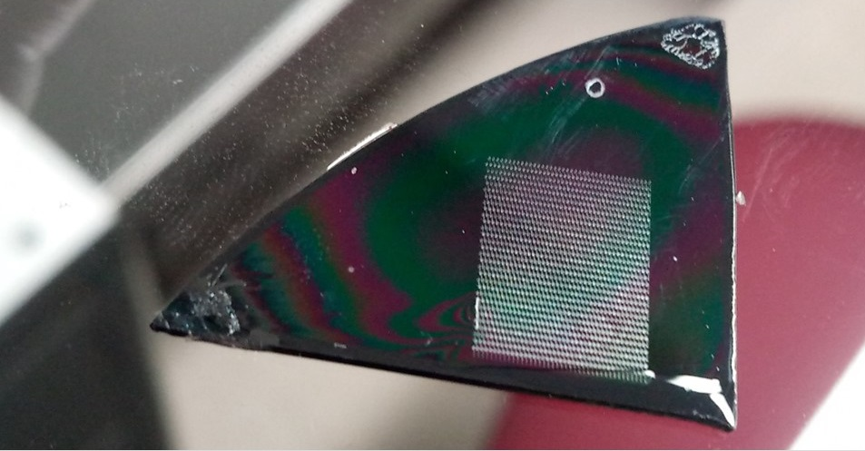
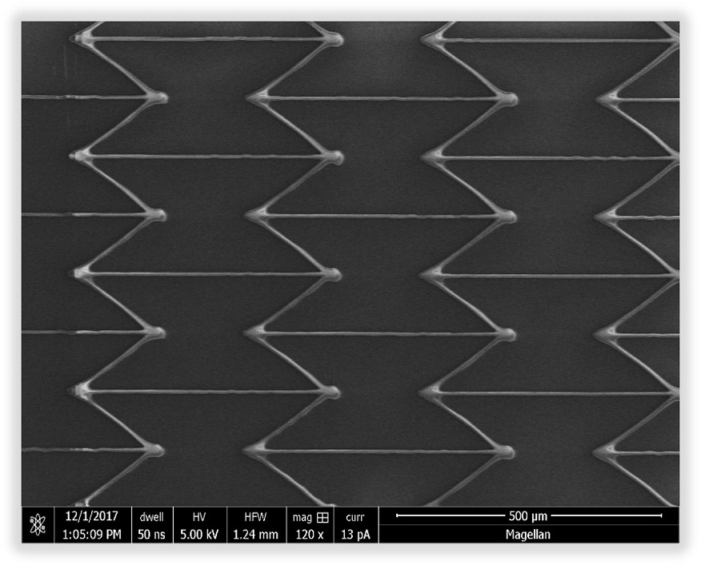
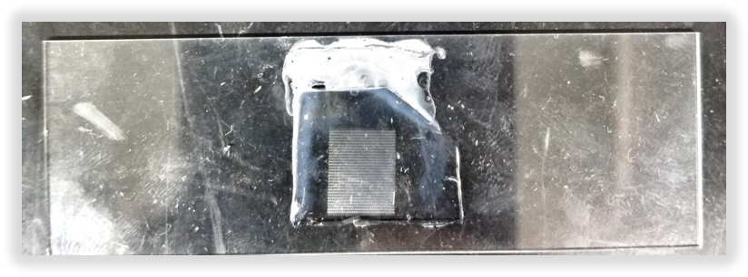
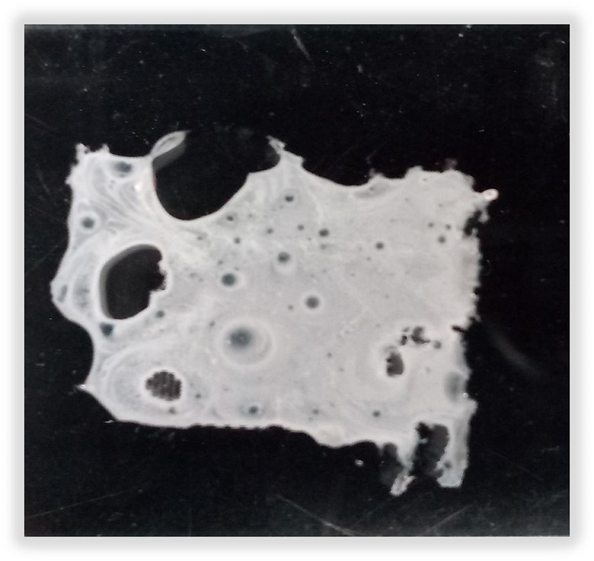
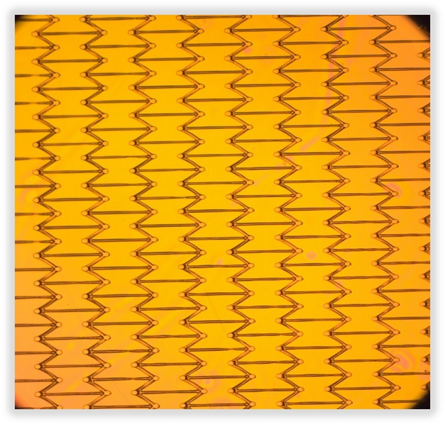

Project 6
Fabrication of Negative Poissons Ratio Structure using Lithography

OVERVIEW:
I collaborated with two members on fabricating an Auxetic structure using two different lithography techniques:
Photolithography & Soft lithography, an optical means to transfer patterns on to a surface.
Unlike conventional material, an Auxteic structure possesses the unique property of expanding in all direction when stretched.
This behavior or property is termed as Negative Poisson's Ratio (NPR). We focused on demonstrating this behavior on micron scale
which could be used in various industries like medical, automobile etc. For this project, we selected a bow-tie structure to print
on to a substrate using photomask and photoresist. After getting the master mold by Photolithography, we created a negative pattern
of a bow-tie structure using a soft polymer, known as Polydimethylsiloxane (PDMS). As we use a soft material for printing,
this process is known as Soft lithography.




This site is under construction! For better understanding, a direct link to a Youtube video is posted below.